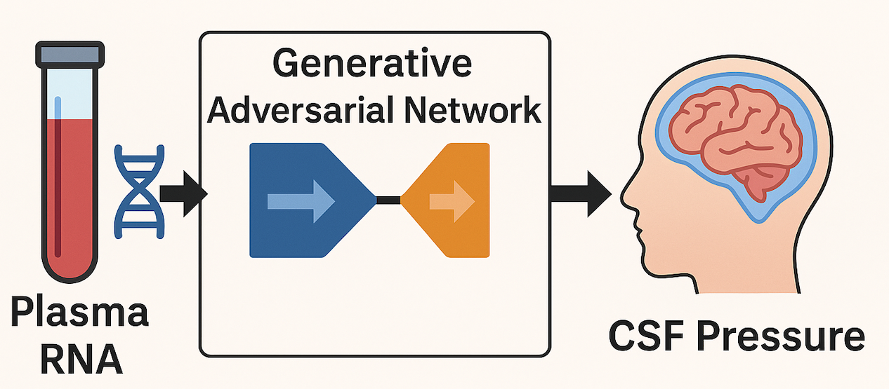
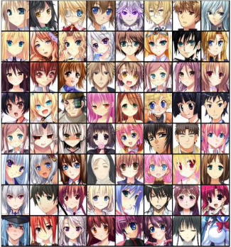
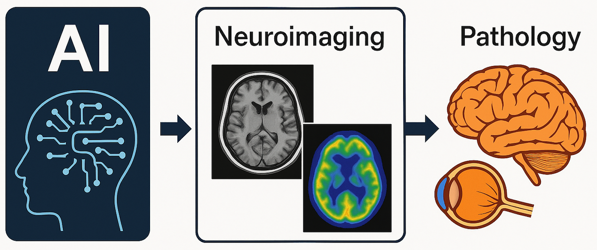

Research
I am broadly interested in multimodal representation learning, world modeling, and perception, with the motivation to build agents in robotics and healthcare that can understand, adapt, and generalize across diverse environments.
|
|

|
Prediction of Cerebrospinal Fluid (CSF) Pressure with Generative Adversarial Network Synthetic Plasma-CSF Biomarker Pairing
Phani Paladugu, Rahul Kumar, Jahnavi Yelamanchi, et al.
Neuroinformatics, Vol. 23(3), 2025
Paper
Introduces a GAN-augmented ensemble model using plasma cfRNA to predict CSF pressure non-invasively. Demonstrates high predictive accuracy and clinical relevance for ICP monitoring in spaceflight and clinical contexts.
|
|

|
Performance Evaluation of Generative Adversarial Networks for Anime Face Synthesis Using Deep Learning Approaches
Jahnavi Yelamanchi, Perepi Rajarajeswari, Redrowthu Vijaya Saraswathi, et al.
Multidisciplinary Science Journal, Vol. 7(3), 2025
Paper
Comparative study of GAN variants (DCGAN, ProGAN, StyleGAN2) for anime face synthesis. StyleGAN2 demonstrated superior effectiveness, achieving the lowest FID score among tested models.
|
|

|
Artificial Intelligence-Based Methodologies for Early Diagnostic Precision and Personalized Therapeutic Strategies in Neuro-Ophthalmic and Neurodegenerative Pathologies
Rahul Kumar, Ethan Waisberg, Jahnavi Yelamanchi, et al.
Brain Sciences, Vol. 14(12), 2024
Paper
Review highlighting the role of AI-enhanced diffusion MRI and PET imaging in early diagnosis of neurodegenerative and neuro-ophthalmic disorders, integrating multimodal data with deep learning models for improved precision.
|
|
|
Graduate Student Instructor, CSE1006 Winter 2023
Graduate Student Instructor, CSE4001 Fall 2023
|
|
{kind=link}